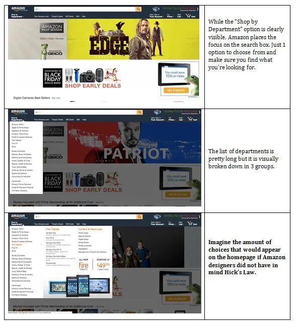
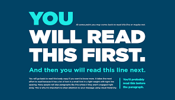
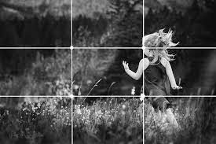

HICK'S LAW
WIKIPEDIA
 Hick's law,or the Hick–Hyman law, named after British and American psychologists William Edmund Hick and Ray Hyman,describes the time it takes for a person to make a decision as a result of the possible choices: increasing the number of choices will increase the decision time logarithmically. The Hick–Hyman law assesses cognitive information capacity in choice reaction experiments. The amount of time taken to process a certain amount of bits in the Hick–Hyman law is known as the "rate of gain of information". The plain language implication of the finding is that increasing the number of choices does not directly increase the time to choose. In other words, twice as many choices does not result in twice as long to choose. Also, because the relationship is logarithmic, the increase in time it takes to choose becomes less and less as the number of choices increases.VISUAL HIERARCHY
WIKIPEDIA
 Visual hierarchy, according to Gestalt psychology, is a pattern in the visual field wherein some elements tend to "stand out," or attract attention, more strongly than other elements, suggesting a hierarchy of importance.[1] While it may occur naturally in any visual field, the term is most commonly used in design (especially graphic design and cartography), where elements are intentionally designed to make some look more important than others. This order is created by the visual contrast between forms in a field of perception. Objects with highest contrast to their surroundings are recognized first by the human mind.RULE OF THIRDS
WIKIPEDIA
The rule of thirds is a method of breaking up an image or design into different sections using columns and rows that form a grid. The grid consists of three evenly-spaced rows and columns to make nine equal boxes that fit over the image.The grid on your phone’s camera is a great example of this. For convenience, we’ve included some examples below.